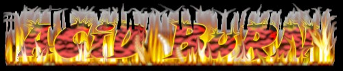
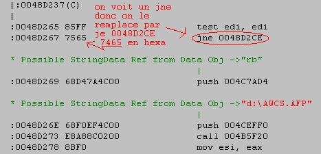

CRACKING N°2 By ...

Hello , je suis de retour pour vous faire un petit tutorial sur le cracking.
Au programme :
- Cracker ToMB RAiDER III
I) Cracker Tomb Raider III
Vous êtes surement beaucoup a vouloir Tomb Raider III mais ce jeux est protégé
contre la copie ! en fin, en theorie !!!!
Tous d'abord nous allons voir la protection.Un CD Vierge ne peut contenir que 650 Mo
de données et le CD original de Tomb Raider III contient 3 Go de données ?!
Oui en fait il y a 4 fichiers qui font 600 Mo chaqun : Awcs.afp ; Neir.afp ; Oket.afp et
Vfaw.afp.Pour Pouvoir le graver il faut d'abord copiez tous les fichiers du CD sur le
disque dur , sauf les 4 cités plus haut.Ensuite creer 4 fichiers avec le meme nom avec un
caractere dedans pour que le fichier fasse 1 octet.Maintenant on graver le CD sans probleme
mais le jeux ne marcheras pas car il est encore protegé !!! Et c'est là qu'intervient le
cracking!
Nous sommes en presence d'un Cd Check (controle du CD) et le jeux nous affiche le message
" Tomb Raider III CD ?" malgré la presence du CD Gravé.
Si Vous avez lu le premier cour, vous vous dites comme moi , on va le desassembler et chercher
cette phrase dans String data reference.Le probleme c'est que l'on ne trouve pas cette phrase
donc il suffit de reflechir un tout petit peu.
Il y a 4 fichiers qui servent à rien donc on va chercher le nom de l'un d'eux dans les Sring data
reference.on voit d:\Awcs.afp , d:\Neir.afp , d:\Oket.afp et d:\Vfaw.afp.

Donc on double click dessus et on retourne dans Wdasm ,juste au code source de cet reference
on remonte avec les barres de defilements et on trouve:

Le Jne (Jump if not equal) fait le saut s'il ne trouve pas le fichier de 600 Mo donc on le
change en je (jump if equal) et le programme saute que si il trouve le fichier. il peut
toujours chercher !!!Donc maintenant on ouvre le fichier Tomb3.exe avec un editeur hexadecimal
et on cherche la chaine 85FF756568D4 et on la remplace par 85FF746568D4 .
et on enregistre le fichier. Le jne 0048D2CE est devenue Je 0048D2CE.
Maintenant on refait pareille avec les autres fichiers.(d:\Neir.afp , d:\Oket.afp et
d:\Vfaw.afp)
Les 2 premiers seront casi identiques mais on ne trouvera pas pareille au fichier "D:\Vfaw.afp"
C'est normal il n'y a rien à changer.Donc Vous avez changer :
- pour "Neir.afp":
0F85F9000000 par 0F84F9000000 ===> le 85 (jne) devient 84 (je)
- pour "Oket.afp":
0F85AD000000 par 0F84AD000000 ===> le 85 (jne) devient 84 (je)
- rien pour "Vfaw.afp"
Normalement ,vous avez tous changer Avec l'editeur Hexadecimal et Sauvegardez.Une fois ceci
fait vous pouvez lancer le jeux avec un Cd gravé dans le lecteur !!!
Tomb Raider III is Now Cracked !!!
Notes:
Si vous voulez enregistrez les modofications faites avec l'editeur hexadecimal vous devez
enregistrer le fichier sous un autre nom car il est utilisé par Wdasm et donc protegé en
ecriture.Exemple: Tomb.exe
Voilà c'est fini pour ce cour mais d'autres suivront je pense alors cracker bien et jouez bien
avec Tomb Raider III!